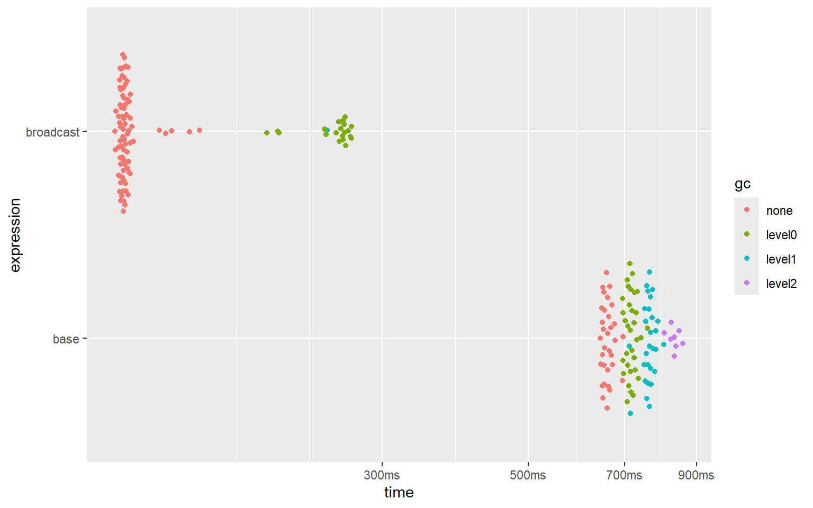
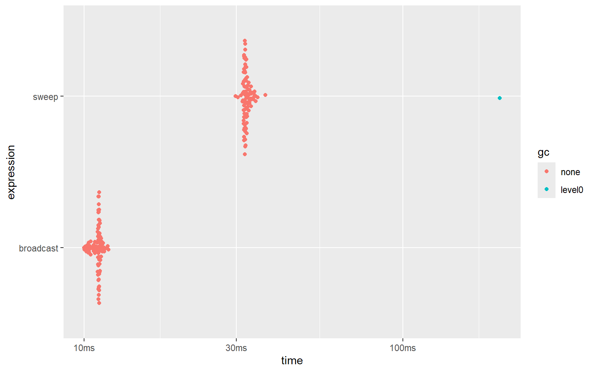
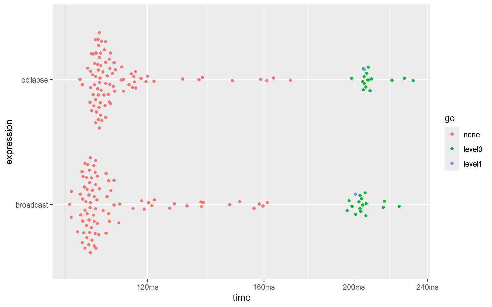
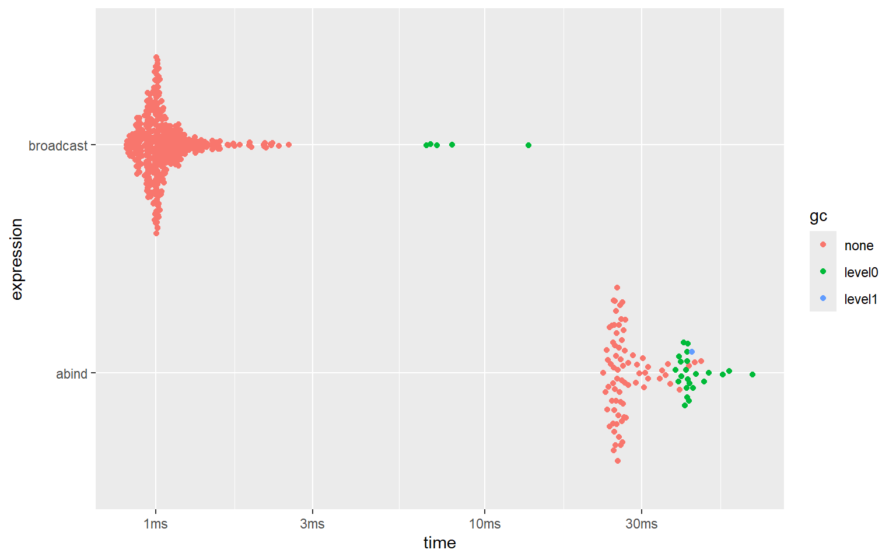
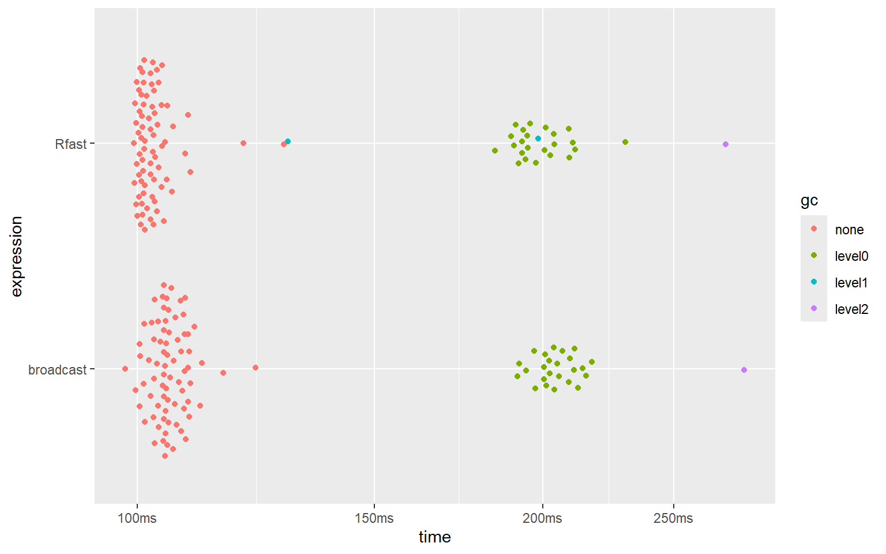
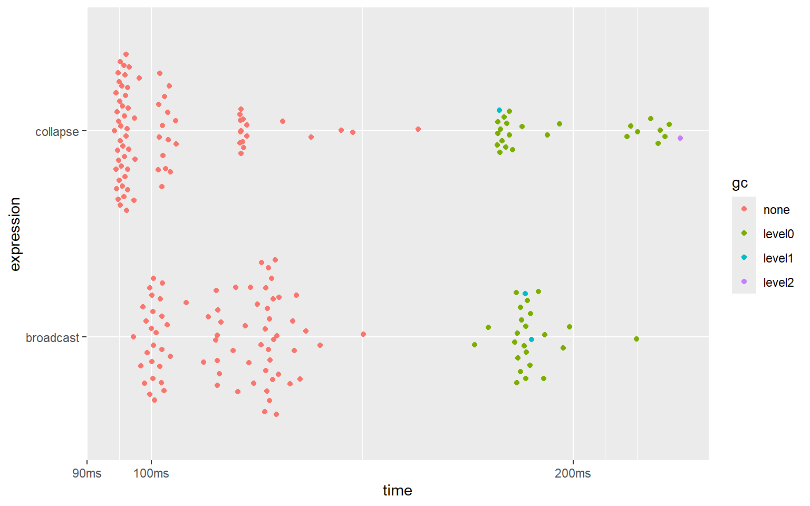
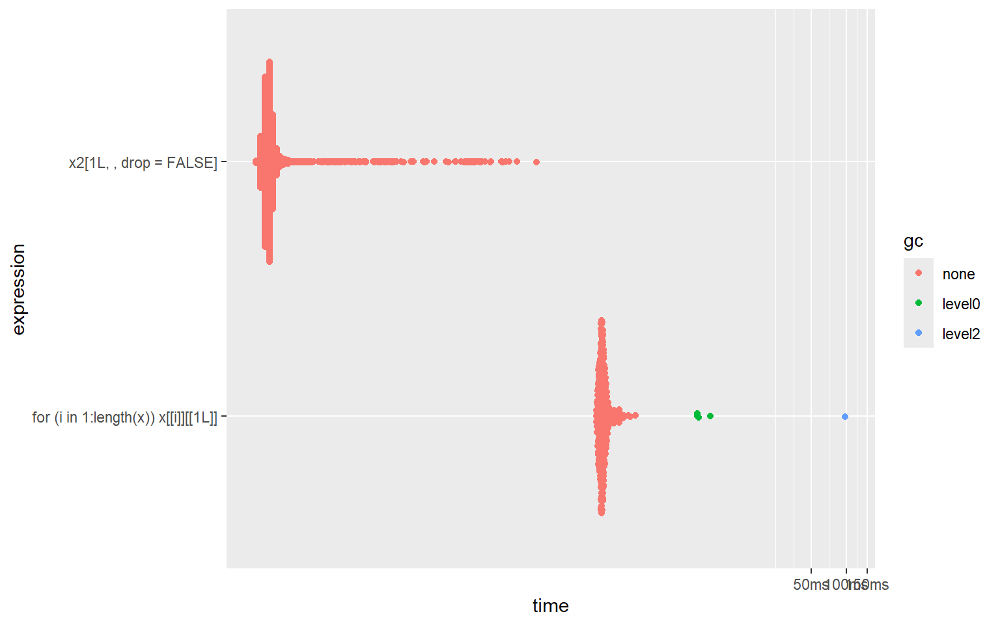

Error: cannot allocate vector of sizeOther Benchmarks
Introduction
This page benchmarks some of the functions from the latest version (0.1.9.5) of ‘broadcast’ with some near-equivalent functions from base and other packages. The code is given here also.
Because all these benchmarks are within , not only speed but also memory usage is compared.
Why care about speed and memory usage?
Faster code means less waiting for the user, which is less annoying. Moreover, faster code is (generally speaking) more efficient code - i.e. you don’t have to run your computer overnight (or at least less hours) - which reduces electricity usage. Using less electricity is better for your wallet and better for the environment.
Code that uses less memory when run means less resources (i.e. less memory) is required. And using less memory reduces the risk of running out of usable memory; when you run out of usable memory, your code may stop running with the following error:
You may want to prevent that. And without more memory-efficient code you’ll be forced to buy more memory (which costs money).
Materials used
The ‘benchmark’ package was used for measuring speed and memory usage, and for producing the figures showing the results.
The benchmarks were all run on the same computer (processor: 12th Gen Intel(R) Core(TM) i5-12500H @ 2.50 GHz) with 32GB of RAM and running the Windows 11 OS (64 bit).
version 4.6.1 with ‘Rstudio’ version 2025.09.1 was used to run the code.
The various comparisons are split over several sections. The code used to run the benchmarks is given in each section, just before the results.
Base replication
Here replicating array dimensions using base is benchmarked against broadcasting.
The following code was used:
n <- 400
x <- array(rnorm(10), c(1, n, 1))
y <- array(rnorm(10), c(n, 1, n))
gc()
bm_base <- bench::mark(
base = x[rep(1, n), , rep(1, n)] + y[, rep(1, n), ],
broadcast = bc.d(x, y, "+"),
min_iterations = 100
)
summary(bm_base)
plot(bm_base)And here are the results:
#> # A tibble: 2 × 6
#> expression min median `itr/sec` mem_alloc `gc/sec`
#> <bch:expr> <bch:tm> <bch:tm> <dbl> <bch:byt> <dbl>
#> 1 base 643ms 659ms 1.52 1.36GB 3.22
#> 2 broadcast 118ms 122ms 8.12 695.24MB 2.16
‘broadcasting’ is 5 to 5.5 times (!) faster than replicating array dimensions, and uses approximately 2 times less memory.
sweep()
Here the sweep() function from base is benchmarked against broadcasting.
The following code was used:
n <- 2000
x <- matrix(rnorm(n), n, n)
cm <- array(colMeans(x), c(1, n))
gc()
bm_sweep <- bench::mark(
sweep = sweep(x, 2, cm, "=="),
broadcast = bc.d(x, cm, "=="),
min_iterations = 100
)
summary(bm_sweep)
plot(bm_sweep)And here are the results:
#> # A tibble: 2 × 6
#> expression min median `itr/sec` mem_alloc `gc/sec`
#> <bch:expr> <bch:tm> <bch:tm> <dbl> <bch:byt> <dbl>
#> 1 sweep 29.9ms 32.1ms 30.9 76.3MB 0.312
#> 2 broadcast 10ms 11.1ms 90.9 15.3MB 0
‘broadcasting’ is about 3 times faster than using sweep(), and uses approximately 5 times less memory.
abind::abind() - binding multi-dimensional arrays
In this section, the performance of the bind_array() function from ‘broadcast’ is compared to the performance of the abind() function from the ‘abind’ package, for binding 3 moderately sized multi-dimensional arrays.
The following code was used:
n <- 110L
nms <- function(n) sample(letters, n, TRUE)
x <- array(as.double(1:25), c(n, n, n))
y <- array(as.double(-1:-25), c(n, n, n))
dimnames(x) <- lapply(dim(x), nms)
dimnames(y) <- lapply(dim(y), nms)
input <- list(x, y, x)
gc()
bm_abind <- bench::mark(
abind = abind::abind(input, along = 2),
broadcast = bind_array(input, 2),
min_iterations = 100,
check = FALSE # because abind adds empty dimnames
)
summary(bm_abind)
plot(bm_abind)And here are the results:
#> # A tibble: 2 × 6
#> expression min median `itr/sec` mem_alloc `gc/sec`
#> <bch:expr> <bch:tm> <bch:tm> <dbl> <bch:byt> <dbl>
#> 1 abind 46.82ms 53.04ms 17.3 121.9MB 25.5
#> 2 broadcast 8.94ms 9.54ms 79.7 30.5MB 15.9
Clearly, the bind_array() function from ‘broadcast’ is about about 5 times faster than the abind() function from the ‘abind’ package. It is also about 4 times more memory efficient.
abind::abind() - binding vectors
In this section, the performance of the bind_array() function from ‘broadcast’ is compared to the performance of the abind() function from the ‘abind’ package, for binding many (100) 1d arrays.
The following code was used:
input <- rep(list(array(1:1000, c(1, 1000))), 100)
gc()
bm_abind <- bench::mark(
abind = abind::abind(input, along = 2),
broadcast = bind_array(input, 2),
min_iterations = 100,
check = FALSE # because abind adds empty dimnames
)
summary(bm_abind)
ggplot2::autoplot(bm_abind)And here are the results:
#> # A tibble: 2 × 6
#> expression min median `itr/sec` mem_alloc `gc/sec`
#> <bch:expr> <bch:tm> <bch:tm> <dbl> <bch:byt> <dbl>
#> 1 abind 21.8ms 23.6ms 42.1 40.1MB 15.6
#> 2 broadcast 763.7µs 910.1µs 1057. 401.7KB 8.74
Clearly, the bind_array() function from ‘broadcast’ is about about 25 (!) times faster than the abind() function from the ‘abind’ package. It is also about 100 (!!!) times more memory efficient.
Rfast::Outer()
An outer computation is a special case of broadcasting, namely a broadcasting computation between a row-vector and a column-vector.
Base has the outer() function to perform outer computations. But the outer() function from base uses soo much memory, that no meaningful benchmark can be made against the methods provided by the ‘broadcast’ package.
The ‘Rfast’ package, however, provides a very fast and memory-efficient implementation of the outer() function. It may be interesting to see how broadcasted operations hold up against the famously fast ‘Rfast’ package.
Here the outer-sum between a directional vector x (direction = 2) and directional vector y (direction = 1), both of 9000 elements, is computed using Rfast::outer() and broadcast::bc.d(), and their speeds and memory consumption are compared.
The following code was used:
n <- 9e3
x <- array(rnorm(10), c(1, n))
y <- array(rnorm(10), c(n, 1))
gc()
bm_outer <- bench::mark(
Rfast = Rfast::Outer(x, y, "+"),
broadcast = bc.d(x, y, "+"),
min_iterations = 100
)
summary(bm_outer)
plot(bm_outer)And here are the results:
#> # A tibble: 2 × 6
#> expression min median `itr/sec` mem_alloc `gc/sec`
#> <bch:expr> <bch:tm> <bch:tm> <dbl> <bch:byt> <dbl>
#> 1 Rfast 99.5ms 102ms 9.72 619MB 3.41
#> 2 broadcast 98ms 105ms 9.46 618MB 3.15
It seems that the implementations of ‘broadcast’ and the blazingly fast ‘Rfast’ package reach similar speeds and use the same amount of memory.
Note, however, that Rfast::Outer() unfortunately only supports numeric vectors, and does not provide higher-dimensional broadcasting. ‘broadcast’, on the other hand, supports all atomic types as well as the list recursive type, and supports arrays of any dimensions up to 16 dimensions.
%r+% operator from ‘collapse’
The impressive ‘collapse’ package supports a large set of blazingly fast functions for a large variety of tasks. One of these is the x %r% v operator. Given a matrix x and a vector v, x %r+% v will add v to every row of x. Using this function in this way is equivalent to the bc.d() function, using a directional vector for v with direction = 2.
Here these 2 approaches are benchmarked.
The code used was as follows:
n <- 8e3
x <- matrix(rnorm(10), n, n)
v <- array(rnorm(10), c(1, n))
gc()
bm_collapse_row <- bench::mark(
collapse = x %r+% v,
broadcast = bc.d(x, v, "+"),
min_iterations = 100
)
summary(bm_collapse_row)
plot(bm_collapse_row)And here are the results:
#> # A tibble: 2 × 6
#> expression min median `itr/sec` mem_alloc `gc/sec`
#> <bch:expr> <bch:tm> <bch:tm> <dbl> <bch:byt> <dbl>
#> 1 collapse 90.8ms 95.7ms 10.5 488MB 3.68
#> 2 broadcast 91.1ms 95.9ms 10.4 488MB 3.48
The ‘collapse’ package is slightly faster than ‘broadcast’ in this case. This does show how super fast ‘collapse’ truly is.
Sub-setting with nested list vs dimensional list
Performing tasks with dimensional lists is often faster and more convenient with dimensional list than with nested lists.
One example is sub-setting.
In the benchmarks below, 2 equivalent sub-set operations are compared:
- selecting
x[[i]][[1L]]fori = 1:length(x)in a nested list (this requires a for-loop). - selecting
x2[, 1L]in a dimensional list (this is a vectorized operation).
where x2 = cast_hier2dim(x, in2out = FALSE).
The following code is used:
x <- lapply(1:200, function(x) sample(1:200))
x <- rep(list(x), 200)
x2 <- cast_hier2dim(x, in2out = FALSE)
bm_hier_vs_dim <- bench::mark(
nested = for(i in 1:length(x)) x[[i]][[1L]],
dimensional = x2[, 1L , drop = FALSE],
min_iterations = 200,
check = FALSE
)
summary(bm_hier_vs_dim)
plot(bm_hier_vs_dim)#> # A tibble: 2 × 6
#> expression min median `itr/sec` mem_alloc `gc/sec`
#> <bch:expr> <bch:tm> <bch:tm> <dbl> <bch:byt> <dbl>
#> 1 nested 800µs 1.48ms 674. 35.54KB 28.3
#> 2 dimensional 1.3µs 2.1µs 296752. 2.44KB 0
As shown in the benchmarks, sub-setting with a dimensional list is hundreds of times (!!!) faster than doing the equivalent sub-setting operation in a nested list.